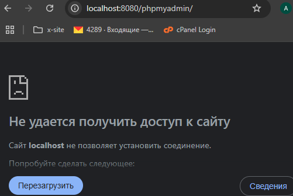
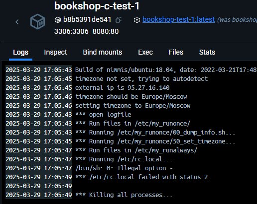
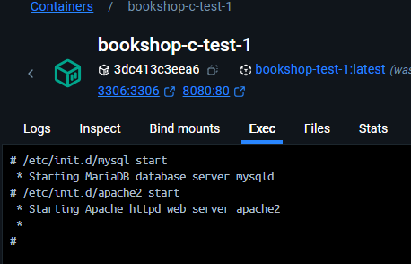
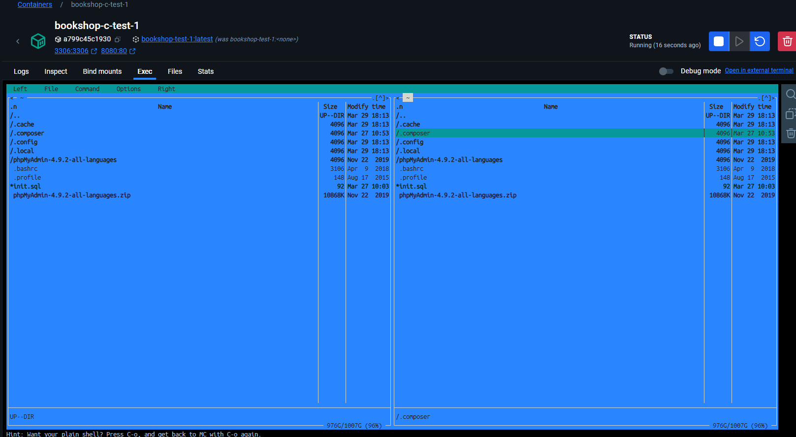
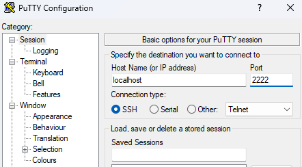
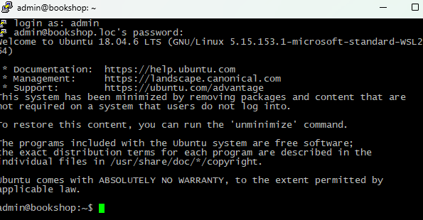
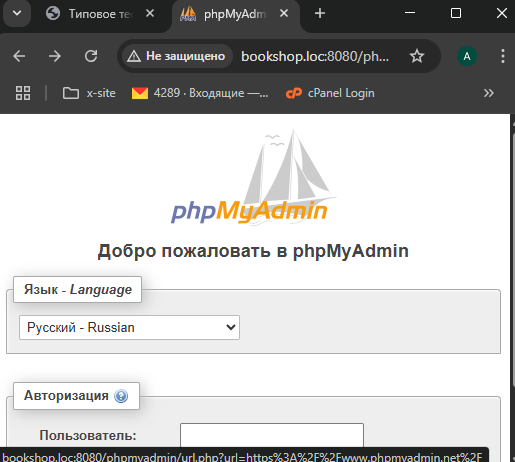
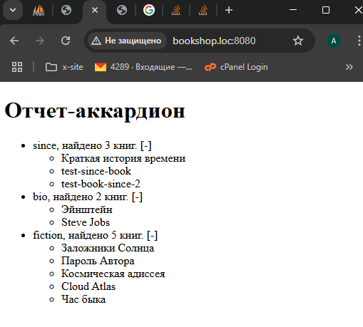
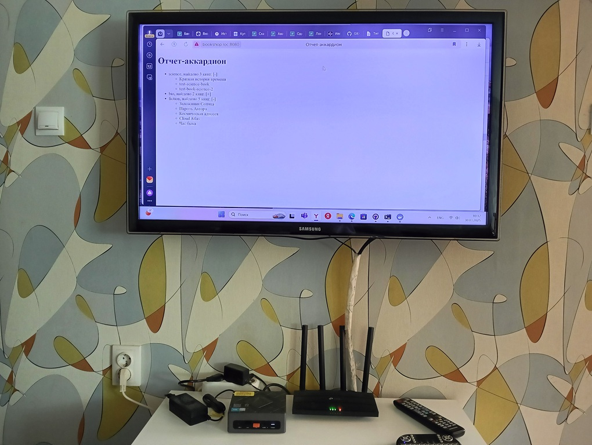

Задание мне было выдано в виде ms-word документа и при беглом просмотре показалось довольно обычным, 100% что оно не может нести коммерчекую выгоду тому кто его выдал и не очень большое по объему. Попробуем вникнуть в детали, что именно требуется.
В моем случае обратная связь по вопросам поддреживалась через hr, которая обычно отвечала в течении дня. В данном задании было непонятно что следует понимать под суммой, а что под количеством книг (строка 17), так же непонятно было что такое mc чтоб включить его в образ (строка 8).
На уточняющие вопросы я получил следующие ответы:
Ну что же имеем: задание проанализировано, обратная связь установлена, каких-то подвохов незамечено. Попробуем выполнить задание.
Мне не часто приходилось выполнять сборки на Ubuntu, в пояснениях было указано что за основу можно взять образ mrxder/docker-apache-php7.2-mysql-phpmyadmin. Так и сделаем.
Клонируем репозиторий. Пока Dockerfile оставим без изменений, просто проверим как все работает. Попробуем собрать образ в docker, выполним следующие команды из каталога с Dockerfile. (bookshop-test-1 - имя image, bookshop-c-test-1 - имя контейнера)
По идее, после этих действий мы должны увидеть страницу входа в phpMyAdmin по адресу localhost:8080/phpmyadmin, но что-то пошло не так, попробуем разобраться.

Обратим внимание что контейнер не запущен. Посмотрим логи, они ведут к файлу rc.local, посмотрим что в нем написано: этот файл стартует mysql и apache2.

Пока закомментим эти строки в Dockerfile и проверим что выйдет. Снова соберем имадже и запустим контейнер. В этот раз он остался запущенным, но phpmyadmin по прежнему недоступно. Попробуем запустить mysql и apache2 вручную.

При ручном запуске серверов страница localhost:8080/phpmyadmin открывается браузером, можно зайти в phpmyadmin с теми логин и пароль что даны в описании к репозиторию. Пока оставим решение проблемы с автостартом серверов на потом. Продолжим выполнение задания...но помним что пока сервер после остановки контейнера придется запускать вручную. Для п.2.1 и 2.2 web все равно пока не потребуется.
Чисто для теста я сначала устанавливал его в запущенном контейнере из командной строки, проверил, а после добавил ту же команду в Dockerfile, снова собрал image и запустил контейнер.

Отлично, с этим проблем не возникло, так что двигаемся дальше...
Немного погуглив я нашел рабочий пример по ссылке. Это как раз то, что надо. Добавляем те пять строчек из примера в Dockerfile. Но вот просто поменять логин и пароль мы не можем. Нам надо сначала создать нового пользователя в системе добавив еще одну строку в Dockerfile.
Снова пересобираем имадже, проверяем, незабыв добавить 2222-й порт в команду при запуске контейнера.

Пытаемся подключиться с помощью putty с логин admin и пароль trust. Збс, работает!
Вспоминаем что в задании написано, хост должен быть доступен по адресу bookshop.loc Так как я использую linux docker engine, настроим хост на windows.
Для этого откроем файл
Добавим в него строчку
Запустим контейнер, указав при этом название хоста, проверим доступность по ssh. Получилось!

В репозитории уже была заготовка, 000-default.conf для конфигурации apache и виртуальных хостов, ей я и воспользуюсь. Это ясно, что виртуальных хостов может быть несколько. Поправим 000-default.conf, поменяем настройку DocumentRoot на /var/www/html/bookshop.loc и добавим в него настройку
А в Dockerfile закоментим строчку и убрав лишние знаки, это нам уже не нужно.
Скопируем папку проекта, дописав команду в Dockerfile, без нее при старте apache выдаст ошибку.
Снова собираем сборку и запускаем контейнер, из контейнера в ручном режиме запускаем mysql и apache, проверяем доступность в браузере по адресу http://bookshop.loc:8080/phpmyadmin/ Отлично, все работает, значит осталась последняя часть задания.

Сразу скажу что я не дэбажил в контейнере, делал эту чать отдельно на OpenServer, а потом просто скопировал файлы.
Внимательно посмотрим задание и определим какие таблицы нам потребуются и какие связи между ними мы создадим:
Сейчас очень часто на собесах спрашивают про внешние ключи, используем их для автоматического удаления строк из таблицы bookstoauthors при удалении строки из authors или books, а также для установки поля books.bookCategory_id в NULL при удалении записи из таблицы categories, для этого создадим таблицы ENGINE=InnoDB
С точки зрения php-кода проект довольно простой, в нем не будет наследования, интерфесов и прочих штук. Однако оформим весь код классами, для разнообразия сделаем публичные и приватные методы, некоторые методы сделаем статическими.
По итогу у нас будут следующие скриты:
Собираем имадже, запускаем контейнер
Вручную в контейнере запускаем mysql и apache
Проверяем http://bookshop.loc:8080/install.php и отчет http://bookshop.loc:8080

Похоже, на этом задание выполнено.
Подумаем, что еще хорошо было бы сделать в этом тестовом проекте чтоб он был немного лучше...
Я создал на своем аккаунте голый репозиторий https://github.com/rightJoint/test-bookshop в который буду отправлять изменения. Может мне придется публиковать эту статью, но давать в ней ссылку на архив как-то не очень, куда лучше ссылку на репозиторий. Подключим репозиторий и сделаем push.
Кроме ноута у меня есть ещё micro-pc, подключенный к по hdmi к телеку. На нем и проверим.

Можно удалить лишние команды из Dokerfile и лишние файлы из проекта, которые для него сейчас уже не нужны.
Конечно меня напрягает запускать сервера вручную. Пока я не нашел способа сделать это, гугл выводил меня на следующие ресурсы по этому запросу forums.docker.com и stackoverflow.com, но предложенные там решения мне не помогли.